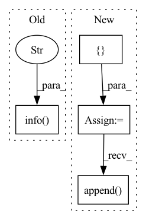

Pattern ID :6962
Before Change
// log.info("Absolute sum of weights in epoch %d for batch %d is %f" % (epoch,i,np.sum(np.array(sum_ws))))
// log.info("Loss in epoch %d for batch %d is %f" % (epoch, i, loss.item()))
log.info("+++++++" )
After Change
optimizer.step()
sum_grads = []
sum_ws = []
for p in kg_embedding_model.parameters():
// print(p.shape)
// print(torch.sum(p))
if p.grad is not None:
// print(p.grad)
sum_grads.append(torch.sum(torch.abs(p.grad)))
sum_ws.append( torch.sum(torch.abs(p)))
sum_grads = torch.tensor(sum_grads)
sum_ws = torch.tensor(sum_ws)
// print(torch.sum(sum_w))In pattern: SUPERPATTERN
Frequency: 3
Non-data size: 4
Instances Fragment ID: 23290587
Project Name: pykeen/pykeen
Commit Name: 70814641d6418a72f4cba5b0f7e18c8acd2f0574
Time: 2018-09-04
Author: ali-mehdi@live.de
File Name: src/utilities/train_utils.py
M Class Name: AnonimousClass
N Class Name: AnonimousClass
M Method Name: train_trans_x_model(7)
N Method Name: train_trans_x_model(7)
M Parent Class:
N Parent Class:
M File Name: src/utilities/train_utils.py
N File Name: src/utilities/train_utils.py
M Start Line: 113
M End Line: 113
N Start Line: 34
N End Line: 107
Before Change
def load_state_dict_mixing_hook(model, model_classes, chkpt_classes, chkpt_dict, prefix, *args, **kwargs):
Modify input state_dict according to class name matching before weight loading
logger.info(f"----------------- SAMImageClassifier.load_state_dict_pre_hook() called w/ prefix: {prefix}" )
// Dst to src mapping index
model_classes = list(model_classes)
chkpt_classes = list(chkpt_classes)After Change
if "head.fc.bias" in chkpt_dict.keys():
param_names.append("output.fc.bias")
elif backbone_type == "OTEEfficientNetV2":
param_names = [
"model.classifier.weight"param_names.append( "head.fc.bias")
for model_name in param_names:
model_param = model_dict[model_name].clone()
if backbone_type == "OTEMobileNetV3": Fragment ID: 23290585
Project Name: openvinotoolkit/model_preparation_algorithm
Commit Name: 645893988f346dd87d1b1868bf6c58f4b9784cb4
Time: 2022-04-06
Author: songki.choi@intel.com
File Name: mpa/modules/models/classifiers/sam_classifier.py
M Class Name: SAMImageClassifier
N Class Name: SAMImageClassifier
M Method Name: load_state_dict_mixing_hook(5)
N Method Name: load_state_dict_mixing_hook(5)
M Parent Class: ImageClassifier
N Parent Class: ImageClassifier
M File Name: mpa/modules/models/classifiers/sam_classifier.py
N File Name: mpa/modules/models/classifiers/sam_classifier.py
M Start Line: 120
M End Line: 146
N Start Line: 135
N End Line: 177
Before Change
if prev_mask is None:
mask = torch.zeros_like(image[:, :1, :, :])
else:
logger.info("InteractiveSeg run with prev_mask" )
mask = torch.from_numpy(prev_mask / 255).unsqueeze(0).unsqueeze(0).float()
pred_probs = self.predictor(image, clicks, mask)
pred_mask = pred_probs > 0.5After Change
return self.forward(rgb_np_img, clicks, form["img_md5"])
def forward(self, rgb_np_img, clicks, img_md5):
input_point = []
input_label = []
for click in clicks:
x = click[0]
y = click[1]
input_point.append( [x, y])
input_label.append(click[2])
if img_md5 and img_md5 != self.prev_img_md5:
self.prev_img_md5 = img_md5 Fragment ID: 23290590
Project Name: sanster/lama-cleaner
Commit Name: a6aec566d963e67c17c0871dca1c89d26e1cdcaa
Time: 2023-04-06
Author: cwq1913@gmail.com
File Name: lama_cleaner/plugins/interactive_seg.py
M Class Name: InteractiveSeg
N Class Name: InteractiveSeg
M Method Name: forward(4)
N Method Name: forward(4)
M Parent Class: BasePlugin
N Parent Class: BasePlugin
M File Name: lama_cleaner/plugins/interactive_seg.py
N File Name: lama_cleaner/plugins/interactive_seg.py
M Start Line: 242
M End Line: 264
N Start Line: 48
N End Line: 75